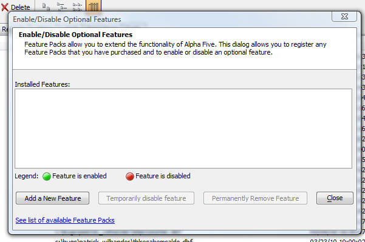

Feature Packs
As of Version 10.5, Alpha Five supports optional Feature Packs, which are offered for sale to add capabilities above and beyond the base product.To register a Feature Pack that you have just purchased, make sure your Control Panel is in the foreground, and Select the Tools | Feature Pack menu item.

To see a list of Feature Packs, click here